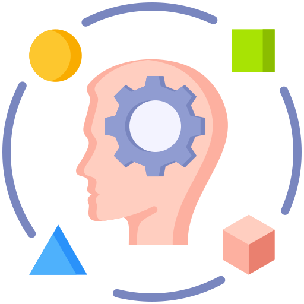

Comunicação
Valorizo a comunicação clara e objetiva, tanto na escrita quanto na troca de ideias. Meu foco está em transmitir informações de forma estruturada, como nas documentações dos meus projetos e em trabalhos acadêmicos.
Trabalho em equipe
Trabalho em equipe é uma das minhas prioridades. Acredito que a troca de ideias e a colaboração tornam qualquer projeto mais rico e eficiente. Tenho experiência em contribuir com projetos compartilhados, respeitando opiniões e buscando soluções em conjunto.

Adaptabilidade
Tenho facilidade em me adaptar a novas situações e aprender rapidamente, especialmente em um campo tão dinâmico quanto a tecnologia. Seja explorando novas linguagens de programação, ajustando projetos a novas demandas ou enfrentando desafios inesperados.